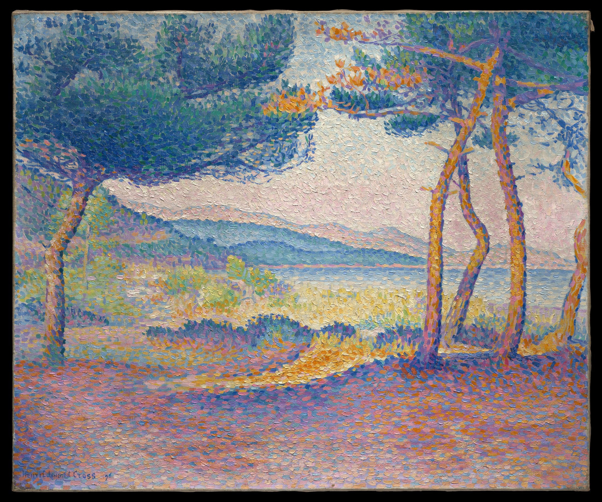

Up close, broken color. A step back, sea air. Stay a moment beneath the pines.
A canopy and trunks frame the light; the horizontal coast steadies the view.
Blue meets orange; yellow meets violet. Near complements set the marks vibrating.
Pink and blue survive in the shade, making the pale shoreline glow.
Suggested design colors and ratios, not sampled pigments.
Enlarged detail · Same image, no color adjustment
Technique: adjacent bars and blocks retain their edges, merging as you step back.
Fact: Cross moved south in 1891; his fine dots later developed into larger blocks. [2]
Reading: no figure is needed. The shade leaves a place for the viewer.
Frame an openingUse a tree or doorway to give the eye somewhere bright to go.
Cool field, warm accentsSea blue 40% · violet 25% · gold 10% · shell white 25%.
Leave a quiet intervalKeep pale gaps; resist filling every area with detail.
#426E98 / #8A79A0 / #D99C3F / #E9DFD5
Suggested design colors and ratios, not sampled pigments.
Henri-Edmond Cross · 1896 · Oil on canvas
The Metropolitan Museum of Art · 1975.1.164
Image: Public Domain, as designated by the museum.
Commentary: Daily Art. Facts sourced; readings interpretive.
[1] Collection record and image rights · [2] Artist biography · [3] Museum full-resolution image
![[3] Museum full-resolution image](https://images.metmuseum.org/CRDImages/rl/original/DP-34471-001.jpg){kind=link}